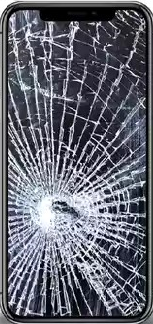

Reparacion de pantallas
.
Sustitución de pantallas rotas o agrietadas..
Reparación de pantallas táctiles que no responden.
.
Sustitución de pantallas rotas o agrietadas..
Reparación de pantallas táctiles que no responden..
Instalación de nuevas baterías para mejorar la duración de la carga..
Diagnóstico de problemas de carga y solución..
Reparación o reemplazo de puertos de carga dañados..
Limpieza de puertos de carga obstruidos.Responsable de la dirección técnica de ServiTech, incluyendo la gestión de las reparaciones y el desarrollo de nuevas soluciones tecnológicas para mejorar los servicios ofrecidos.

Equipo de desarrollo de software, asegurando que las aplicaciones y sistemas internos sean eficientes y estén a la vanguardia tecnológica.
En un esfuerzo por reducir el impacto ambiental de los dispositivos electrónicos desechados, ServiTech ha lanzado un nuevo programa de reciclaje. Los clientes pueden llevar sus viejos celulares y otros dispositivos electrónicos a cualquier tienda ServiTech para ser reciclados de manera adecuada. Este programa no solo ayuda a reducir los residuos electrónicos, sino que también educa a la comunidad sobre la importancia del reciclaje y el manejo responsable de los desechos tecnológicos.
En una reciente iniciativa filantrópica, ServiTech ha donado 500 dispositivos celulares reparados a estudiantes de bajos recursos en colaboración con varias organizaciones educativas. La donación busca cerrar la brecha digital y proporcionar a estos estudiantes las herramientas necesarias para acceder a recursos educativos en línea. "Creemos en la importancia de la educación y en el acceso igualitario a la tecnología.
Innovando una vez más en el sector tecnológico, ServiTech ha lanzado una nueva aplicación móvil que permite a los usuarios realizar un diagnóstico remoto de sus dispositivos celulares. La aplicación puede identificar problemas comunes, como fallos de batería y errores de software, y proporcionar soluciones inmediatas o recomendaciones para llevar el dispositivo a un centro de servicio. "Esta herramienta permite a nuestros clientes ahorrar tiempo y recibir asistencia técnica sin salir de casa.
¡No te preocupes más! En ServiTech, somos especialistas en la reparación de dispositivos celulares. Ofrecemos servicios rápidos y de calidad garantizada.
Solucion de problemas de cargar